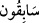

yoldadırlar. Sonra Allah Teâlâ, azabından hiç kimsesinin emin olmaması için “__WORD__ ile
sözü noktalamıştır.
İhlâs kelimesinin hürmetine bunların hepsi de cennettedirler. Rivayete göre Hz. Ömer
(r.a.) minberde Peygamberimiz (s.a.)’in “Bizim öncülerimiz öndedir, muktesıdlarımız
kurtulmuştur, zâlimlerimiz bağışlanmıştır”[82] buyurduğunu duyurmuştur.
Ebû Bekir b. Verrâk der ki: “Allah Teâlâ bu tertibi insanların makamlarına göre
yapmıştır. Zira kulların halleri üç türlüdür. Mâsiyet, gaflet, sonra tövbe sonra kurbet ve
Allah’a yakınlıktır. Kul, mâsiyet işlediği zaman zâlimler kategorisine girer. Tövbe
edince muktesıdlar arasına katılır; tevbesi sağlam olup ibadet ve mücâhedesi çoğalınca
da sâbikûn sırasına dahil olur. Sâbık da iki türlüdür. Birincisi sâbık doğar, sâbık yaşar,
sâbık ölür. İkincisi sâbık doğar, zâlim yaşar, sâbık ölür. Sâbık doğdukları ve sâbık
öldükleri için bunlara zâlim denilmesi âriyettir. Bu ârizî zulme itibâr edilmez. Ezel ve
ebede itibâr edilir. Yâni ikisi arasındaki berzah dönemine itibâr edilmez. Bu ümmetten
zâlim doğup zâlim yaşayıp zâlim ölenler ise Peygamberimiz (s.a.)’in “Benim şefaatim
ümmetimden büyük günah sahiplerinedir”[83] buyurduğu kebâir ehlindendir. Buna göre
“muktesıd” tövbe üzere ölen, sâbık tâat üzere yaşayan ve tâat üzere ölendir. Yahut sâbık
iyiliklerinin kötülüklerine keffâret olduğu ve bu şekilde hasenat ve sevapları ağır
gelenlerdir. İşte Peygamberimiz (s.a.)’in “Sâbıklara gelince onlar, cennete girecek ve
orada hesapsız rızıklandırılacaklardır”[84] sözünün mânâsı budur. Muktesıdlar ise
kolay bir şekilde muhasebe edileceklerdir. Zâlimler mahşer süresince hapis edilecekler,
sonra Allah Teâlâ onları rahmetiyle karşılayacaktır.
Biz bunlardan bazılarını âyetin tertibine göre arz ediyoruz. Burada üç tâifeden murâd
edilen üç sınıftır ki bunlar yalnız Kur’an okuyan, Kur’an okuyup onunla amel eden,
Kur’an okuyup onunla amel eden ve onu öğretendir.
Yahut “zâlim”, malıyla müstağnî olan, “muktesıd” diniyle müstağnî olan ve “sâbık”
Rabbiyle müstağnî olandır.
Yahut zâlim, kâmet yapıldığı zaman camiye giren, muktesıd ezan okunduğu zaman
camiye giren ve sâbık ezandan önce camiye girendir. Bunlardan birincisi böyle
gecikmekle kendi ecir ve sevabını noksanlaştırıp diğerlerine hâsıl olan sevap buna hâsıl
olmadığı için bu kişi zâlim kabul edilmiştir.
Yahut zâlim, Allah’a âdet ve gaflet üzere ibadet eden, muktesıd Allah’a rağbet ve
rahbet üzere ibadet eden, sâbık heybet üzere Allah’a ibadet edendir.
Yahut zâlim, dünyası kendisini âhiretinden meşgul eden; muktesıd hem dünyası hem de
âhiretiyle meşgul olan; sâbık, âhireti kendisini dünyasından meşgul edendir.
Yahut zâlim, helal saymayıp haram olduğunu da inkâr etmeyerek mâsiyetleri işleyen;
muktesıd yâni ortada olan kişi, tâatlerden farzlar ve vaciplerden başka fazla bir şey
yapmayan; sâbık yâni hayırda yarışan kişi ise tâati çok yapıp mâsiyetlerden kaçınarak
bu konuda zirveye ulaşandır.
Yahut zâlim, azap görüp sonra kurtulan; muktesıd yâni ortada olan kişi sitem ve azar